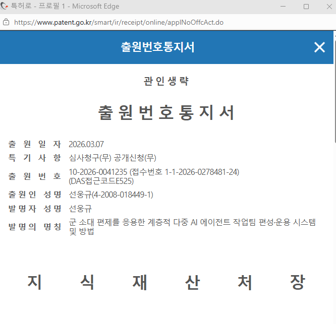

군 소대 편제를 응용한
계층적 다중 AI 에이전트
작업팀 편성·운용 시스템 및 방법
목차
기존 멀티에이전트 시스템의 5가지 한계
구조적 한계 ④⑤ + 문제의 본질
평면 구조에서는 에이전트가 늘어날수록 모든 문제가 제곱으로 악화된다.
이 전제를 깨지 않는 한, 어떤 최적화도 O(n²)의 벽을 넘지 못한다.
Platoon Formation은 이 전제 자체를 뒤집는다.
핵심 발상 — 군 소대 편제를 AI에 적용
전 세계 군대가 수백 년간 전장에서 검증한 소대(Platoon) 편제 — 그 조직 원리를 AI 에이전트 조율에 이식한다.
= 오케스트레이터 → 매니저 → 워커
군 편제 ↔ AI 시스템 대응표
군사 비유의 각 개념이 AI 시스템에서 어떤 역할과 대응하는지 한눈에 정리한다.
| 군 편제 용어 | AI 시스템 역할 | Claude Code 용어 | 설명 |
|---|---|---|---|
| 지휘관 | 사용자 (인간) | User | 유일한 인간. 임무 부여·승인·해산 결정 |
| 소대장 | Orchestrator AI | Team Leader | Opus급. 작업 분해, 배정, 결과 종합 |
| 연락병 | UI 인터페이스 | — | 지휘관과 소대 사이 통신 모듈 |
| 분대장 | Manager AI | Teammate | Sonnet급. 분대원 지휘, 결과 취합 |
| 분대원 | Worker AI | Subagent | Haiku급 기본 (복잡 작업 시 Sonnet급 전환). 실무 수행 12종 |
| 용병 | 외부 AI | — | Codex·Gemini·Grok·Perplexity |
| 무기 | 기능 모듈 | Skill | 에이전트가 자율 선택·장착하는 도구 |
| 작전 통제소 | 통합 관제 모듈 | — | 복수 소대 관제, DB+UI |
편제 구조 — 전원이 AI 에이전트
소대를 구성하는 소대장, 분대장, 분대원, 용병 모두 AI 에이전트이다. 유일한 인간은 이 소대를 지휘하는 지휘관(사용자) 1명뿐.

지휘관(PO) → CPC → 연락병 → 소대장 → 3개 분대(Alpha/Bravo/Charlie) + 용병 4 + Skills 21
평면 구조 VS 소대 편제
기존: 평면 구조
- 45개 에이전트가 모두 상호 통신
- 통신 경로 990개
- 전원 고급 모델 = 비용 100%
- 확장 시 매번 재설계
- 사용자 수시 개입
본 발명: 소대 편제
- 계층적 통신 — 직속 상·하위만 소통
- 통신 경로 48개 (95.2% 감소)
- 동적 모델 배치 = 비용 약 5% (95% 절감)
- 소대 복제만으로 무한 확장
- 사용자 개입 3회 이내
편성 공식 — 예측 가능한 팀 구성
작업팀 총원 = P + N × (1 + M) + K
P = 본부 정원 (소대장 + 연락병)
N = 분대 수 (지휘관 결정, 기본 3~5)
M = 분대당 분대원 수 (도메인에 따라 구성)
K = 용병 수 (외부 AI, 임무에 따라 가변)3계층 동적 모델 배치
소대장이 분대별 임무의 성격·난이도·비용을 종합 판단하여 최적 등급의 AI 모델을 선정한다.
전체 오케스트레이션, 전략 의사결정
1개 에이전트
임무 분해, 분대원 투입 판단
3개 에이전트 (소대장이 등급 선정)
구체적 실무 작업 수행
36개 에이전트 (복잡 작업 시 중급 전환)
분대원 에이전트 12종 표준 역할
소프트웨어 개발 도메인에서의 바람직한 실시예. 분대당 M = 12개의 표준화된 역할.
※ 역할 유형과 수(M)는 도메인에 따라 자유롭게 구성 가능 (데이터 분석, 콘텐츠 제작 등)
용병 풀 (500) — 게이트웨이 구조
외부 AI는 개별 에이전트가 직접 호출하지 않고, 풀 모듈(500)이 단일 게이트웨이 역할을 한다. 소대장과 분대장만 게이트웨이를 통해 호출한다.
코드 생성 특화
멀티모달 분석
실시간 정보
검색 특화
종래: 내부 에이전트 41개(=총원 45−용병 4) × 용병 4종 = 164개 (모두가 각각 연동)
본 발명: 호출자 4명(소대장 1+분대장 3) → 게이트웨이 1개 → 용병 4종 = 8개 → 95.1% 감소
제1절감: 통신 경로 O(n²) → O(n)
평면 구조에서는 n개 에이전트가 모두 상호 통신하므로 n(n-1)/2개의 경로가 필요하다. 소대 편제는 직속 상·하위만 통신하므로 경로가 선형이다.
| 규모 | 평면 구조 | 소대 편제 | 감소율 | 개선 배수 |
|---|---|---|---|---|
| 45개 (1소대) | 990 | 48 | 95.2% | 21배 |
| 100개 | 4,950 | 103 | 97.9% | 48배 |
| 450개 (10소대) | 101,025 | 453 | 99.6% | 223배 |
| 4,500개 (100소대) | 10,122,750 | 4,503 | 99.96% | 2,248배 |
제2절감: 동적 모델 등급 배치
종래 구조는 역할 구분이 없으므로 45개 전원에 고급 모델을 배치해야 한다. 본 발명은 계층별 임무 난이도에 맞춰 모델을 배치한다.
※ 아래는 Claude (Anthropic)를 사례로 제시한 것이며, 모델 등급 체계는 다른 AI 제공자에도 동일하게 적용 가능.
종래 (전원 Opus)
- 45개 × 고급 단가
- = 기준 비용 100%
본 발명 (동적 배치)
- Opus 1 + Sonnet 3 + Haiku 36
- = 기준 비용의 약 5%
이중 비용 절감 — 곱셈적 결합
두 절감 메커니즘은 독립적으로 작용하면서 곱셈적으로 결합된다.
제1절감: 통신량 감소
- O(n²) → O(n) 통신 경로
- 45개 기준 95.2% 절감
- 토큰 소비 · API 비용 · 처리 시간 동시 감소
제2절감: 토큰 단가 감소
- 고급 → 중급 → 경량 동적 배치
- 45개 기준 약 95% 절감
- 동일 작업 품질, 약 1/19 비용
→ 총 비용 = 개별 절감율의 단순 합산을 초과하는 수준으로 절감
→ 규모가 확대될수록 효과가 가속적으로 증대
운용 프로세스 — 사용자 개입 3회
사용자 개입은 딱 3회. 나머지 전 과정을 AI가 자율 수행한다.
통신 구조 — 4가지 통신 경로
직속 상·하위 간에만 통신. 타 분대 정보 유입 차단 → 컨텍스트 오염 방지
인접 분대 간 정보 공유. 충돌 방지와 협업에 활용.
웹 UI를 통한 원격 지휘 채널.
이종 AI를 공유 자산으로 호출. 연동 경로 K개로 고정.
자율성과 안정성의 양립
3단계 실패 처리
- 재시도 (1회) — 동일 작업 재실행
- 대안 투입 — 다른 역할/모델 투입
- 상위 보고 — 분대장 → 소대장 에스컬레이션
개별 에이전트 실패가 전체 시스템에 파급되지 않도록 계층적으로 격리한다.
기능 모듈 자율 장착
- 임무 분석 — 분대원이 스스로 필요 도구 판단
- 1순위 — 사용자 커스텀 모듈에서 선택
- 2순위 — 외부 마켓플레이스에서 탐색
자율 장착하되 계층적 권한 구조로 보안 위험 차단. 하위 에이전트 생성 등 위험 권한은 상위 계층에 한정.
선행기술 대비 종합 비교
| 비교 항목 | MetaGPT | CrewAI | AutoGen | HALO | 본 발명 |
|---|---|---|---|---|---|
| 통신 구조 | O(n²) | O(n²) | O(n²) | 3계층 | O(n) 계층 |
| 편성 공식 | 없음 | 없음 | 없음 | 없음 | P+N(1+M)+K |
| 모델 배치 | 단일 모델 | 단일 모델 | 단일 모델 | 미정의 | 동적 3계층 |
| 이종 AI | 미지원 | 미지원 | 미지원 | 미지원 | 공유 풀 |
| 사용자 개입 | 제한 없음 | 수시 | 반복 | 미정의 | 3회 이내 |
| 확장 방식 | 재설계 | 재구성 | 재설계 | 미정의 | 소대 복제 |
| 비용 예측 | 불가 | 불가 | 불가 | 불가 | 공식 산출 |
6가지 고유 기술 특징 — 선행기술에서 미발견
소대 복제 — 45 → 450 → 4,500
동일한 소대 편제를 복제만 하면 규모가 선형적으로 확장된다. 소대 간 직접 의존 없음 → 구조 변경 불필요.
통신 48 / 비용 약 5%
통신 453 / 경로 99.6% 감소
통신 4,503 / 경로 99.96% 감소
※ 각 에이전트는 임무에 필요한 기능 모듈(Skill)을 자율 선택·장착하여 수행 능력을 확장한다.
기대 효과
산업 적용 분야
소대 편제는 도메인 비종속적 구조이다. 분대원 역할(M)만 해당 산업에 맞게 바꾸면 동일 시스템 적용 가능.
P = 본부 정원 (소대장+연락병), N = 분대 수, M = 분대당 분대원 수, K = 용병(외부 AI) 수

군의 편제 지혜를 AI의 미래로
감사합니다
White Tiger · 백호